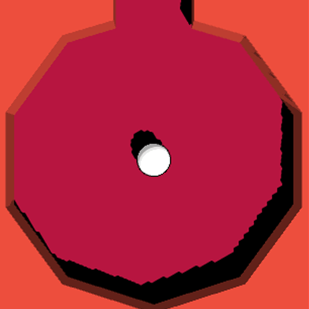
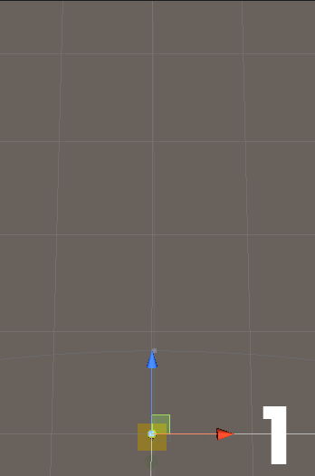

FollowThePath
In "FollowThePath", you guide a ball through a randomly generated path by tilting your mobile device in different in order for it to move forwards in the path.
This is a game where the primary goal is to assist the player in focusing and relaxing, the secondary goal is to roll as far as you can.
This is a project that I've on & off from for the better part over 2,5 years.
I've reached a certain point of the project where I'm unsure where to take the project next. There are parts of this project that I'm proud of that I want to highlight.
Engine: Unity 2019.2.7
Genre: Arcade
Team Size: 1
Role: Technical Design
Platform: Mobile
RESPONSIBILITIES
General
- Increase programming experience
- Learn 3D modelings
Level Generation
- Create Tiles
- Implement "Object Pooling" for level generation
Accessibility Design
- Add accessibility options

Level Generation

About
The level generation is one of the aspects in "FollowThePath" that I'm the most proud of.
It uses a method called
"
Object Pooling
",
for this project it's used to create a pool of objects that I can reuse whenever I want.
"Tiles" were modeled using "Blender", they're of similar height & width.
In the GIF, you can see some examples of the level generation in action.